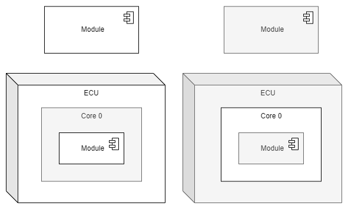
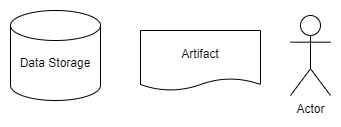
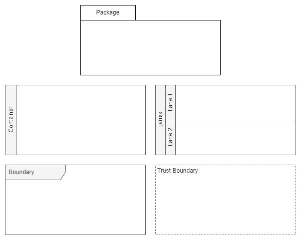
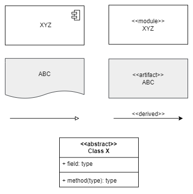
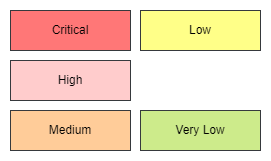
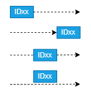

Diagrams
Tools
The following tools may be used to create diagrams, whereby only Draw.IO is recommended.
Draw.IO
Draw.IO is our recommended tool to create diagrams.
The diagram files must be stored as PNG including metadata using *.drawio.png as
file ending. The file ending indicates that the PNG includes metadata and it can be reopened and
changed in Draw.IO.
All descriptions and templates in this guide are based on Draw.IO.
PlantUML
PlantUML is not recommended due to several drawbacks:
Frequently incompatible changes between PlantUML versions.
Layouting larger diagrams is very tricky.
Difficult to adhere to this guideline in terms of colors, shapes, arrow types, etc.
Rendering takes time when building the documentation.
However, PlantUML is supported for this documentation.
Rules
Note
This guideline is based on the Unified Modeling Language. It highlights the most important aspects for the diagrams and specifies some extra rules like colors for safety and security elements. Refer to the UML standard for more details about modelling diagrams.
Abstraction and Size
There are no restrictions regarding the level of abstraction or size. But try to keep the diagrams as small as possible:
Only add elements which are really necessary for the intended purpose of the diagram.
Do not mix several layers of abstraction.
This makes the diagrams easier to read, reduces the effort of drawing and the likelihood of becoming outdated is less.
Tailoring and Customization
Follow this guideline as close as possible to ensure consistency regarding style, colors, etc. This makes the diagrams more readable and reduces misunderstandings when interpreting them.
But a guideline cannot cover all special use cases in a project, so it is explicitly allowed to add / change rules within a project. Note, that every customization must be explained in a Legend like changing colors, using different shapes.
Almost all colors defined in this guide are taken from the default palette of Draw.IO to
facilitate the creation of diagrams. For other tools, use the color codes specified below.
Colors can increase the readability. But keep in mind, that some people have problems to differentiate between colors or cannot see colors at all. Do not rely only on colors, but add additional information to the diagrams if reasonable, e.g. Stereotypes.
Legend
A legend is not needed if this guideline is followed or common UML practices are used. But whenever a custom element or style is used, add a legend.
The legend only needs to include added and changed elements, it does not need to repeat this guide.
Diagram Properties
Diagrams with transparent background might not be rendered as intended. Lines directly on the edges of the diagrams might be hard to read. To avoid these problems, use the following diagram settings:
Background |
#FFFFFF |
Margin |
10 px |
Text
The standard text is defined with the following attributes:
Text Color |
#000000 |
Background Color |
Transparent |
Font |
Helvetica |
Size |
12 pt |
Style |
regular (not bold, italic, etc.) |
Some elements have their own text specifications (e.g. Annotations). In general, the style of the text does not have any predefined meaning, you are allowed to change them if reasonable, e.g. to improve the readability or if you want to highlight important information.
Standard Shapes
Style
Shapes can be black, white or any shade of grey. The exact color codes are not prescribed in this guideline, they are up to the author and may depend on the tooling and visibility, e.g. when nesting elements. In case the colors have an certain meaning in a diagram, they must be defined in a Legend.
Lines have a thickness of 1 pt.
{kind=link}
Standard colors:
Type |
Fill Color |
Line Color |
Left Side |
Top Side |
|---|---|---|---|---|
2D White |
#FFFFFF |
#000000 |
n/a |
n/a |
2D Grey |
#F5F5F5 |
#666666 |
n/a |
n/a |
3D White |
#FFFFFF |
#000000 |
#E5E5E5 |
#F2F2F2 |
3D Grey |
#F5F5F5 |
#666666 |
#DCDCDC |
#E9E9E9 |
Types
Every diagram type has it’s own set of shapes, but the following shapes are common:
{kind=link}
Shape |
Description |
|---|---|
Data Storage |
Can be any type and any amount of memory, including a one-byte temporary variable, a huge database or calibration data in external EEPROM. |
Artifact |
An artifact is a physical piece of information that is used or created during the software development process like source code, executable files, written documentation, etc. |
Actor |
Models a role that a person or external system can take during an interaction with the system. Actors are always outside the system boundary. |
The following shapes are intended to collect elements which belong together.
{kind=link}
Shape |
Description |
|---|---|
Package |
A package bundles modules, classes, etc. which belong locally and often also physically together, for example the BSP (board support package), which has package already in it’s name. |
Container |
Containers are the most generic collections and can consist of any elements. They can be modelled vertically and horizontally. |
Lanes |
Lanes are special versions of containers. They are often used to model interactions. Every lane stands for a specific class, module, actors, etc. |
Boundary |
Used to delimit or separate functions from each other. A special version of boundaries is defined in Sequence Diagram. |
Trust Boundary |
A boundary where program data or execution changes its level of “trust”, mainly used in security related diagrams. |
Stereotypes
Stereotypes are specified with << and >>. They are used to express certain details.
If the drawing tool does not support the shapes or line styles as described in this guideline, stereotypes can always be used as a fallback.
{kind=link}
Safety and Security
If ASIL or CAL are important for a diagram, the elements are colored as follows:

Level |
Fill Color |
Line Color |
|---|---|---|
Unknown / to be set later |
#D0CEE2 |
#36393D |
ASIL D, ASIL D(x), CAL 4 |
#FFCCCC |
#36393D |
ASIL C, ASIL C(x), CAL 3 |
#FFCC99 |
#36393D |
ASIL B, ASIL B(x), CAL 2 |
#FFFF88 |
#36393D |
ASIL A, ASIL A(x), CAL 1 |
#DAE8FC |
#36393D |
QM |
#CDEB8B |
#36393D |
Not relevant for the diagram |
Standard shape colors |
Standard shape colors |
Risk Levels
In some diagrams, e.g. in the Attack and Fault Tree Diagram, the elements can be colored according their risk level.
{kind=link}
Level |
Fill Color |
Line Color |
|---|---|---|
Critical |
#FF7777 |
#36393D |
High |
#FFCCCC |
#36393D |
Medium |
#FFCC99 |
#36393D |
Low |
#FFFF88 |
#36393D |
Very Low |
#CDEB8B |
#36393D |
Connectors
Every diagram type has it’s own set of connectors, but they have the following rules in common:
Color |
#000000 |
Thickness |
1 pt |
Line types |
|
Angles |
|
Labels |
|
{kind=link}
Annotations
Note |
Contains any textual content. It is connected to the to-be-annotated element with a straight dashed line. |
Property |
Circle or ellipse element with a short textual string, e.g. “ABC”, “reuse” or “3rdparty”. Properties are not unique. |
ID |
Rectangle containing an ID. IDs are unique, so that the elements can be unambiguously referenced later. |
{kind=link}
Connections can also have properties or IDs. Depending on the context, it makes a difference where they are placed. E.g. a data flow connector can be annotated at the beginning (write), at the end (read) or at the middle of the connector (transmission). These annotations can be put on the line (unlike textual labels with transparent background) or close next to it.
{kind=link}
The following overview shows our standard annotations. In contrast to the standard shapes, the colors are not grey-scale to increase the readability. To avoid mixing up the different types accidentally, the IDs must be prefixed as shown below. Optionally, a space after the prefix can be added.
Examples: SR123 in brown annotates a shared resource, ID p1 in blue specifies an ID to be
able to uniquely identify a diagram element.
{kind=link}
Type |
Text Color |
Fill Color |
Line Color |
|---|---|---|---|
Note |
#666600 |
#FFF2CC |
#D6B656 |
Standard Property |
#FFFFFF |
#60A917 |
#2D7600 |
Cybersecurity Property |
#FFFFFF |
#E51400 |
#B20000 |
Standard Unique ID |
#FFFFFF |
#1BA1E2 |
#006EAF |
Shared Resource |
#FFFFFF |
#A0522D |
#6D1F00 |
Safety Mechanism |
#000000 |
#E3C800 |
#B09500 |
Security Control |
#000000 |
#FA6800 |
#C73500 |
Types
On the following sub-pages you can always find a diagram model and an example. The examples are Draw.IO files with two tabs: the example itself and the diagram model. You can download the files and use them as a starting point / template.
All rules mentioned above apply to these types, like how to model connections or annotations.